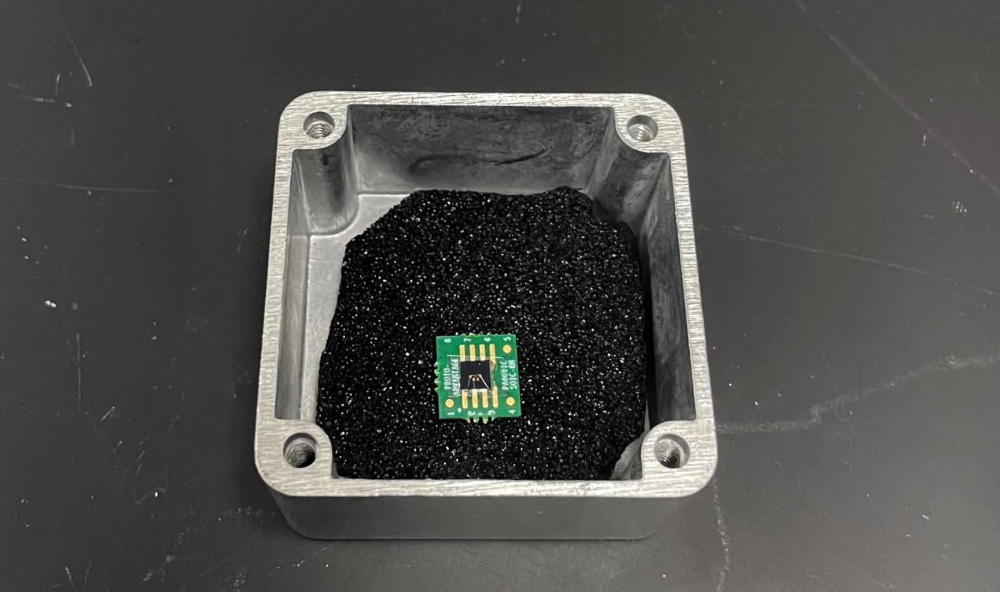

Developing Low Temperature Contacts for TMD Heterostructure Devices
This project was finished for the UC Riverside Research in Science and Engineering (RISE) Program.
Studies of two-dimensional (2D) Van der Waals (VdW) heterostructure devices have contributed significantly to novel optoelectronics advancements and correlated
quantum states at the atomic scale. WSe₂, a semiconducting transition metal dichalcogenide (TMD), has a direct bandgap when reduced to a monolayer, and can be
used for both optical and electrical measurements. However, a lack of reliable, low resistance electrical contacts to semiconducting 2D materials has hindered
careful electron transport studies and further development of optoelectronic devices.
Here, we aim to develop reliable, Ohmic contacts by using pre-patterned
platinum contacts for p-type WSe₂ monolayers.

The development of low temperature contacts will open up the possibility to measure Quantum Hall states with observable Shubnikov-de Haas (SdH)
oscillations and other quantum structures such as electrically controlled quantum dots and correlated states in TMD twisted heterostructures. Going forward, we will
try to develop contacts for other TMD materials to expand the available 2D materials for electronic studies and the development of efficient, silicon-based devices
among modern electronics.
My final report can be found here
and oral presentation slides here.